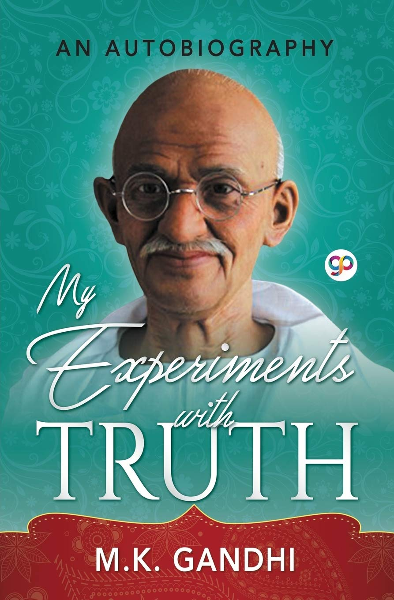
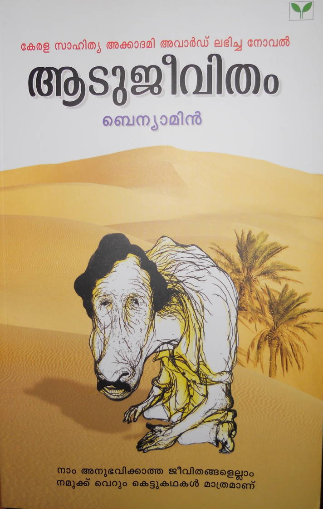
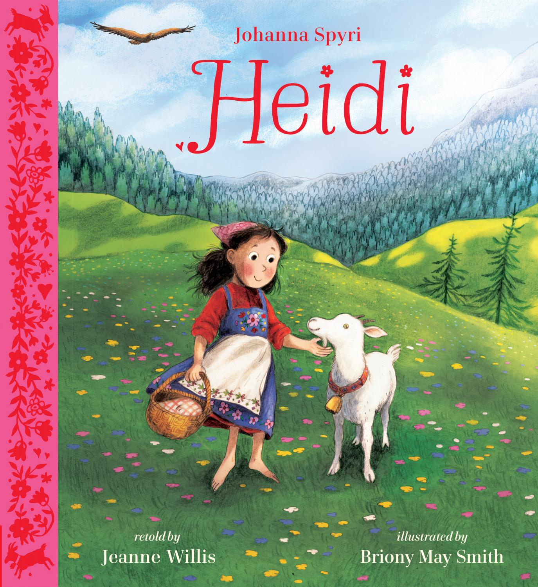
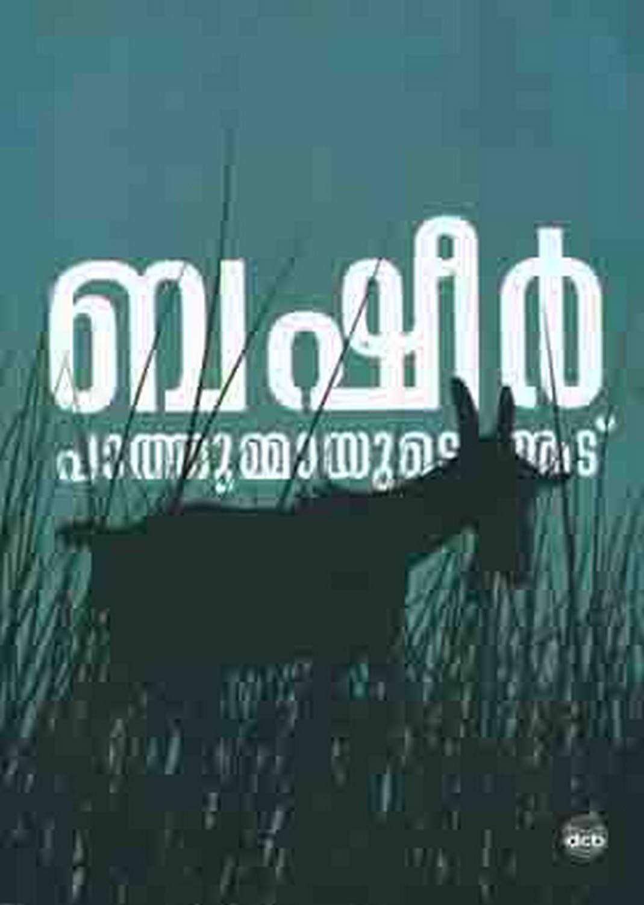
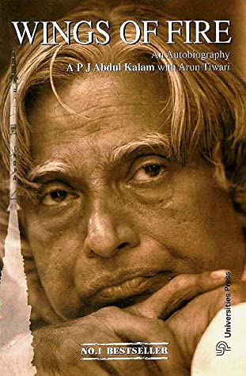
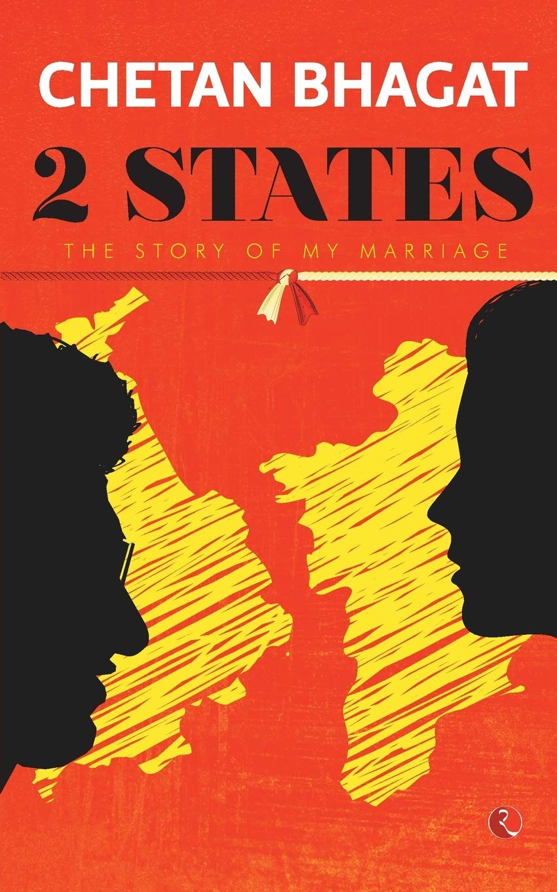
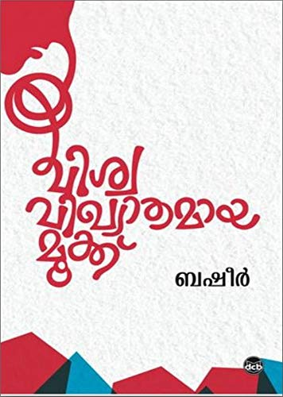

Name:My Experiments With Truth
Author:M.K.Gandhi
Pages:272
The Story of My Experiments with Truth is the autobiography of Mahatma Gandhi, covering his life
from early
childhood through to 1921.

Name:Aadujeevitham
Author:Benyamin
Pages:299
Goat Days is a 2008 Malayalam novel about an abused migrant worker in Saudi Arabia written by
Bahrain-based
Indian author Benyamin.

Name:Heidi
Author:Johanna Spyrl
Pages:142
Heidi is a work of children's fiction published in 1881 by Swiss author Johanna Spyri, originally
published
in two parts as Heidi: Her Years of Wandering and Learning and Heidi: How She Used What She Learned.

Name:Pathummayude Aadu
Vaikom Muhammad Basheer
Pages:166
Pathummayude Aadu is a humorous novel by Vaikom Muhammad Basheer. The goat in the story belongs to
his
sister Pathumma. Basheer begins the novel with an alternative title for the book, Pennungalude
Buddhi.

Name:To Kill a Mockingbird
Harper Lee
Pages:389
Pathummayude Aadu is a humorous novel by Vaikom Muhammad Basheer. The goat in the story belongs to
his
sister Pathumma. Basheer begins the novel with an alternative title for the book, Pennungalude
Buddhi.

Name:Wings Of Fire
A.P.J. Abdul Kalam
Pages:678
Pathummayude Aadu is a humorous novel by Vaikom Muhammad Basheer. The goat in the story belongs to
his
sister Pathumma. Basheer begins the novel with an alternative title for the book, Pennungalude
Buddhi.

Name:Two States
Chetan Bhagath
Pages:189
Pathummayude Aadu is a humorous novel by Vaikom Muhammad Basheer. The goat in the story belongs to
his
sister Pathumma. Basheer begins the novel with an alternative title for the book, Pennungalude
Buddhi.

Name:The Great Gatsby
F. Scott Fitzgerald
Pages:166
Pathummayude Aadu is a humorous novel by Vaikom Muhammad Basheer. The goat in the story belongs to
his
sister Pathumma. Basheer begins the novel with an alternative title for the book, Pennungalude
Buddhi.

Name:Vishwa Vikyathamaya Mooku
Vaikom Muhammad Basheer
Pages:158
Vishwa Vikyathamaya Mooku is a humorous novel by Vaikom Muhammad Basheer. The goat in the story
belongs to his
sister Pathumma. Basheer begins the novel with an alternative title for the book, Pennungalude
Buddhi.